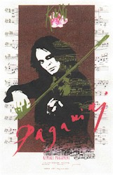

Contents | Features | Reviews | Books | Archives | Store |
 |
|
| Movie Credits | Buy It! |
Pagnini
Review by Gregory Avery
Posted 23 November 1999
|  |
Written
and Directed by Klaus Kinski. Starring
Klaus Kinski, |
Before
he took leave of this earth in 1991, at the age of 56, the great, mad actor
Klaus Kinski attempted to leave two indelible marks upon a world, which he
regarded so scabrously, yet sought approval and affirmation from so desperately.
The first was the publication, in 1988, of his memoirs, entitled "All I
Need is Love,” which created a scandal and has since become enshrined as one
of the great, lunatic autobiographies of all time. The second was a film about
the early 19th century Italian violinist and composer Niccoló Paganini, which
he would write, direct and star in. Both endeavors would reflect the life and
ambition of the man who created them, someone given to expansive gestures,
consuming appetites and needs, and to never doing anything small.
Kinski
was born in Poland, where he was raised he claimed, in conditions of abject
poverty, where he and his family had to do without basic necessities for long
periods of time. His father, whom Kinski unconditionally called "a
saint,” suffered greatly when he was unable to provide for them. This version
of events, which provide a vivid opening section to the autobiography, have
since been called into question by those who knew Kinski and said that he
actually spent his childhood in the home of a wealthy pharmacist. Whatever. With
the invasion of 1939, Kinski was conscripted into the Nazi army, where he took
one look at conditions on the battlefield and availed himself at the first
opportunity of being captured and spending the remainder of the hostilities in
an Allied P.O.W. camp. When he was released, his family had scattered to the
four winds.
In
Germany, he took to the stage, performing plays by Cocteau, Pirandello, and
Ibsen in a theatrical company. He also gave one-man shows, where he recited
verse by Goethe and François Villon (with whom he felt a close affinity). His
performances were met with greater and greater enthusiasm and acclaim. Film work
was soon to follow.
Kinski
moved quickly from one film assignment to the next. Pay was often a deciding
factor. He appeared in all kinds of films -- crime dramas, historical epics,
spaghetti Westerns. He did a wonderfully entertaining turn as a soldier
traveling on a train in David Lean's Doctor Zhivago, and was equally good
in two Jess Franco films, Count Dracula (where he played Renfield), and Justine
(where he played the imprisoned Marquis de Sade -- both films, without
dialogue). At the same time, he turned down offers of work from Luchino Visconti,
Federico Fellini, Liliana Cavani, Miklos Jançsó, Claude Lelouch and Steven
Spielberg. He turned down Raiders of the Lost Ark so he could do two
vastly inferior films, the second of which was a would-be sequel to The Story
of O entitled Fruits of Passion. He once complained about an offer by
the West German government to receive their highest civilian award: not only was
the notion of giving prizes stupid, but there was no money to go along with it,
either.
Kinski
acquired a lifestyle to which he became accustomed: fast cars, a house on the
Appian Way, smoking 40 cigarettes a day. His first marriage produced a daughter,
Pola; his second another daughter, Nastassja; and he had a son by his third
marriage, to a Vietnamese girl, Minhoi. Kinski was unusually possessive of his
wives, insisting that they go on location with him when he went off to make a
film. When he made Aguirre, the Wrath of God in the Amazon, he and Minhoi
slept at night on an open raft. With the arrival of his son, Nanhoi, Kinski
became completely, paternally obsessed with the child --
a case of total loco” parentitis”. He only lived each day for
the time when he could rush home to be with his golden child. He dreamed of
earning enough money so that he could buy a house in the middle of the
California Redwoods, where he and Nanhoi could spend all of their time together.
Even this proved to be too much for the ever-patient Minhoi; a restraining order
put an end to that grand scheme.
Aside
from acting and the birth of his son, Kinski's other abiding interest was in
women. Many, many pages of the autobiography are devoted to the pursuit of this
enterprise, and even a cursory perusal can produce head-spinning results, even
if only a fraction of the stuff is true. A neighbor woman with a funny walk. An
aspiring actress whom he would meet by climbing through an upper-storey window,
at night. A woman referred to as Ugly Ursula. Many prostitutes, both young and
very old. The wife of a friend who invites him over to dinner. A young girl who
teases him, and then threatens to turn him over to the police. Another girl, a
dancer, whom Kinski slowly unwraps and then stares at from every angle. Moroccan
women. The daughter of the president of the Esso fuel company. Edith Evans.
Vonetta McGee. An ardent Communist who talks too much. The first female film
director he ever works with. ("That would be something new!" writes
Kinski.) A hairdresser, and her female lover. Luna, the statuesque model who
worked for designer Rudi Gernreich. Possibly one member of his immediate family,
prior to his going off to fight in the war. And more, much, much more. It goes
beyond immodesty, beyond bragging, beyond indecency, beyond pornography, into a
rare, high, wild stratospheric realm all of its own.
It's
as if, in reaction to his impoverished early years -- if he had impoverished
early years -- Kinski, like Rimbaud or Henry Miller, believed in living life to
the fullest extent, experiencing everything and filling-up the senses to a
heightening degree. (This is someone who, when he attended an art exhibition and
saw Van Gogh's work for the first time, was so emotionally moved that he fled
into the street, weeping copiously.) Unlike Henry Miller, though, Kinski
conveys, in the account of his conquests, little or no joy in loving women, in
women's bodies, or, particularly, in or of a woman's experience in being loved.
They become "faits accompli,” and they are dispensed with accordingly.
"Why
am I a whore?" Kinski writes. "I need love! Love! Always! And I want
to give love, because I have so much to give. No one understands that I want
nothing from my whoring around but to love."
Kinski
loathed directors, stage or screen. (Jess Franco seems to have been an
exception.) He especially loathed Werner Herzog: "ignorance, ineptness,
arrogance, and thoughtlessness" are about the nicest things he has to say
about him. "Outhouse fly" is another. Yet, they would make five films
together! On the one hand, Herzog says its wasn't really as bad as all that
(after all, the man did get some of Kinski's best acting work out of him); on
the other, he does acknowledge that Kinski would sometimes go into screaming
fits that lasted over an hour. And the more they worked together, the more
Herzog seemed to take them as par for the course. Still others put down reports
of Kinski's temperamental behavior altogether, stating that he was cooperative,
receptive, solicitous, and perfectly fine to get along with. His son Nanhoi told
a German magazine in 1998, "Klaus had sympathy, [and] always gave
consideration to others."
 This
November, Herzog's new film, My Best Friend, about his relationship with
the actor, will be released in the U.S. Kinski finally realized his dream of
making a film about Niccoló Paganini -- which, starting in August, began
receiving a series of theatrical showings in Germany, sponsored by a German film
magazine -- back in the late Eighties. He had tried to get it made as far back
as 1970, before he had achieved international renown as a film performer. In the
mid-Eighties, he almost made it for Menahem Golan, the Israeli producer who,
with his cousin Yoram Globus, tried to turn Cannon Pictures into a force to be
reckoned with by the Hollywood majors. Kinski suspected that Golan did not quite
see eye-to-eye with him about the conception of the film, and ended up getting
it made through another production agreement -- fortuitous, as it turned out,
because a sharp financial turn caused Cannon to slip and tumble into oblivion by
the end of the decade, never to recover. Kinski's Paganini premiered
during the Cannes Film Festival in May, 1989. It would be Kinski's last film.
This
November, Herzog's new film, My Best Friend, about his relationship with
the actor, will be released in the U.S. Kinski finally realized his dream of
making a film about Niccoló Paganini -- which, starting in August, began
receiving a series of theatrical showings in Germany, sponsored by a German film
magazine -- back in the late Eighties. He had tried to get it made as far back
as 1970, before he had achieved international renown as a film performer. In the
mid-Eighties, he almost made it for Menahem Golan, the Israeli producer who,
with his cousin Yoram Globus, tried to turn Cannon Pictures into a force to be
reckoned with by the Hollywood majors. Kinski suspected that Golan did not quite
see eye-to-eye with him about the conception of the film, and ended up getting
it made through another production agreement -- fortuitous, as it turned out,
because a sharp financial turn caused Cannon to slip and tumble into oblivion by
the end of the decade, never to recover. Kinski's Paganini premiered
during the Cannes Film Festival in May, 1989. It would be Kinski's last film.
The
two men would seem to be worlds, if not only generations, apart, but as it turns
out they had more in common than one would think. Niccoló Paganini was born in
1782 in Genoa, and gave his first public performance, playing a series of
variations he composed himself, at age nine. By age 13, he had studied under
four violin masters, and eventually left his family to embark on a successful
concert career. His performances were unique not only for his skill, but for the
theatrical flair which he put into them -- re-tuning the strings of his
instrument in mid-performance to produce certain sounds; using different,
sometimes newly invented, ways of bowing; and performing entire compositions on
only one string. (Feasible, but highly difficult.) He was described as having a
"mysterious and magician-like physical appearance.” Paganini also spent
long periods of time away from the stage, becoming involved with love affairs,
gambling, and leading a dissolute life. He spent eight years serving as music
director for the Princess of Lucca. Eight years away from the concert stage
could be an eternity for a performer at a time before the advent of recorded
music. But return he did. The very mention of Paganini's name was enough to
ensure there would be a full house by the time he took the stage that evening. A
concert tour lasting from 1826-33 made him a small fortune, and enabled him to
buy a permanent home, near Parma.
Modern
medicine suggests that Paganini's playing ability -- the unusual dexterity and
flexibility of his hands and fingers -- may have been the result of Marfan's
Syndrome, a genetic disorder that was not identified until the end of the 19th
century. The disorder may also have contributed to the cause of Paganini's
death, by cancer of the larynx, in 1838. Among twentieth century musicians,
probably Jasha Heifetz and Yehudi Menuhin have come the closest to approximating
Paganini's virtuosity with the violin. Menuhin provided the violin solos for a
1948 British film about the musician, The Magic Bow, where Stewart
Grainger appeared as a stiffly grand, immaculate, proudly undistinguished
Paganini.
Kinski's
Paganini was to have been something of a family affair. Hiss fourth wife,
Debra Caprioglio (who had just appeared in the latest film by Italian reprobate
Tinto Brass, Paprika), would play the great love of Paganini's life;
Nanhoi, now renamed Nikolai (Kinski was born Nikolaus Günther Nakszynski),
would play Paganini's son. Nastassja, who had emerged as a major actress in her
own right by this time, was to have appeared in the film as well, but after
three days she fled from the set in tears, never to return. A few years earlier,
while making a B-picture, Crawlspace, in the States, Kinski had summarily
demolished his director on that film in front of cast and crew, bellowing,
"DO YOU KNOW WHO I AM?! I AM KLAUS KINSKI!!" One can only imagine what
it would be like to take direction from such a man on a bad day.
On
the other hand, in his memoirs, Kinski recounts a day when he and Nastassja were
stuck in traffic, in Rome (on the way to the Banque de Rothschild, no less), and
Nastassja starts to cry because she thinks her father doesn't love her. Kinski
consoles her by telling her about this wonderful part he has planned for her to
play in the film he was going to make, the part of "the young woman
Paganini desires with wild passion, a woman who is herself obsessed with
Paganini.” Nastassja's reaction, negative or affirmative, to this disclosure
are not recorded.
"A
long bow. How otherwise could one begin this film?" wrote German film
journalist Christian Kebler. Actually, Kebler is referring to the ovation which
opens the film (the violin bow comes in later), the long, rapturous ovation,
which primes us for what we are to expect, from a full audience in the gilt
auditorium of the stunningly beautiful Parma opera house, accompanied by a
woman's voice, on the soundtrack, speaking like a hysteric in a Fellini film:
"The theatre is immense.... But nobody can ignore the music.... Tormented,
like a mad animal, he also looks confident, demonstrating to everyone his
profound suffering.... A vampire with a violin, he could suck the blood from our
hearts, just like he sucked the money from our pockets.... Like a trance, I feel
waves of excitement wash over me. Like I am experiencing a tender passion.... It
is impossible not to love him...." Then, the maestro, bowing, bowing (how
else to begin this film?), disheveled long black hair falling over his face,
returning to perform after a long period away, puts bow to string and begins to
play. Women in the audience swoon. They shutter. They tremble. They clutch their
faces with their hands. Their eyes become riveted upon the stage. Others become
so overwhelmed by what they hear that they cover their ears with their hands.
Others still, in the boxes, kneed and tear at the skirts upon their laps. Then,
when he has finished, he is besieged by applause. Women storm the stage and
shout at him. They throw flowers at him. He humbly acknowledges them, arms
outstretched. Bouquets land at the feet of the magic man. It is positively
anything a performer could possibly dream of. They can't get enough of him.
"When Paganini performs, I experience an orgasm," a woman tells us,
finally, before the camera tears us away from the tumultuous crowd and the
stage.
Off-stage,
it is all Paganini can do to keep himself upright. He is so disoriented, he even
mistakes his son, who rushes up to greet him, as a "ragazza" (little
girl). Images of a group of young girls playing and romping in a meadow appear
on the screen. Stern, wearing a black suit and a tall hat, Paganini returns a
bouncing ball that has strayed from them. The girls are overawed and impressed.
"I wish he would choose me," one says.
A
woman -- a Countess, in fact -- is being taken by coach -- to? from? -- a
performance by Paganini. She gets very worked up over Paganini, and all she has
is a picture of the maestro in a newspaper. Very, very worked up. The part is
played by Dalila Di Lazzaro, the female "creation" in Andy Warhol's
Frankenstein. She happens to bear a passing resemblance to Kinski's
daughter, Nastassja. Could this have been the part he intended for her to play?
(Kinski said that Nastassja was to have played Baroness Helene von Feuerbach,
who became so captivated by Paganini that, "Madame X"-style, she
leaves her husband and two children to be with him.) After this one scene, the
Countess is driven away and we never see her again.
A
covey of lawyers and advocates swirl 'round and 'round a judge's chambers,
arguing for or against Paganini, much to the irritation of the judge (Feodor
Chaliapin) who is hearing their case. (Chaliapin looks like he's about to have a
fit of sciatica at any moment.) They rant and rave about a number of things.
That the musician was a sickly child, raised in poverty. That he is always sick,
his body "a demon's paradise" of diseases, and that he only takes half
of his prescribed medication in order to save money. That he convinced a girl,
Angelina, who was pregnant with his child at the time, that she had a bacterial
infection, and had her drink a solution that was poisonous. (We, alternately,
see her being ravished by Paganini, and foaming at the mouth from the poison.)
That he is deserving of consideration because he has devoted himself to the
violin since the age of nine. That he seduces everyone with his music,
especially women. That he is an "animal" whose goal is to "seduce
every girl he sees, especially minors.” (The term "minors" is
particularly, and continually, used in the picture.) A little of this is a lot,
including the judge. "You're all crazy!" he tells them before leaving
the chamber. "This case is just too big, signori!"
Paganini
goes home, only to have to leave for more touring, endless touring. A woman,
Antonia (Debra Caprioglio), is screaming and shouting at him about it. She
stalks him from room to room, caterwauling at him. I have never seen Debra
Caprioglio act, but, hopefully, she can do more than scream. Later, Paganini
finds her, at night, in the darkened house, spread on a red couch wearing a red
gown. Is she asleep? Is she sick? Is she dead? Is she worn out from all that
screaming?
Paganini
travels by coach to fulfill his touring engagements. It is muddy. There is much
loading of baggage, trunks, boxes from one coach to another. Paganini writes, in
elaborate longhand, in a ledger or journal. He eats in his coach. A live chicken
is thrust straight into the camera right before having its head cut off, in the
town square where the coach is parked. During all this, Paganini's thoughts keep
returning to his son: bathing him, dressing him, putting him down for naps,
teaching him how to play chess. Ah, the tedium, tedium of travel....
In
another town, Paganini sees a young boy playing the violin in the street, for
money from passers-by. The tune he plays sounds like "Deutchland, Über
Alles.” Paganini solicitously approaches the boy, takes his violin, and
gathers a crowd around him and the boy with his brilliant improvisation on the
tune the boy was playing. When he's finished, he takes off his hat and passes it
around; people who don't fork over money right away get thunked by the brim of
the hat. After giving the boy the boodle from this collection, the maestro
leaves by saying, "Paganini salutes you. Go home to your dinners!"
A
woman, who is apparently from the U.S., thinks it would be a great idea if
Paganini got together with them to tour the States. Money, money, money, just
waiting for the taking. She has a 13-year-old daughter, Carol (Donatella Rettore,
a popular Italian recording artist in the 1980s), who's musically inclined.
"I need to see her talent," Paganini says, deadpan. The next thing we
know, Paganini is with the girl in a room at an inn. They are getting better
acquainted. She screams and screams. There is a lot of screaming in this movie.
No wonder Paganini has barely undressed (the girl, of course, is fully unclad
for the occasion) -- he can hardly wait to get away from the noise. As he
readjusts his clothing, the girl is still screaming -- to get acquainted some
more. "Encore! Encore!" she shrieks (among other things). She gets
down on her knees. Paganini can't get out the door because there are people
downstairs who are looking for this man with an underage girl. With no other
means of escape, Paganini finally accedes to her wishes, if only to shut her up.
Ah, the burden of genius.
Quieter
moments are saved for time spent with his child -- who, in the style of the
period, has long hair, rolls a hoop, and wears androgynous clothes that easily
blur his gender. (At times, the film does not make it clear if he is a boy or a
girl.) Kinski's son Nikolai was about ten years old when this was made, and
Paganini, and the camera, languish long looks upon the boy's face. Nikolai does
have a beautifully expressive face, which is splendid to gaze upon. (He is said
to have inherited the "almond eyes" of his mother, and the full lips
of his father.) The child is devoted to his father, and even wallops a priest
(played by veteran French actor Bernard Blier) with a violin bow when the man
arrives unannounced and barges into the house. That's enough to ensure that
Paganini does not have a burial place secured for him in hallowed ground. (Nanhoi/Nikolai
is presently pursuing a career as an actor, just like Pola and Nastassja Kinski,
before him.)
Public
sentiment turns against Paganini, the ungrateful lot. A stage comedian, wearing
satyr's ears, does a wicked pantomime of Paganini's style of playing, in front
of a receptive audience. (The comic, seen from afar, is played by no less than
the great Marcel Marceau.) Everyone turns against Paganini. All that is left is
Paganini and the child, Achille (that clears things up: Achille is a name
usually reserved for the male gender). Paganini plays the violin, plays and
plays. He has blood on his lips, so it turns out he's playing for his life. The
camera watches him, moving back and forth and back again, like a referee at a
prize fight. Achille watches, smiling to the beautiful music, while cradling a
white-and-grey kitten. Paganini plays and plays, until he can play no more. He
keels over, violin still in-hand. Achille realizes there's something wrong. He
rushes to Paganini and clings to him and won't let go.
He
gazes at Paganini, now wrapped from head to foot in burial cloth. He clings to
the coffin as the gravediggers take it to be buried in some barren patch of
land. Nobody can get rid of this child. What is to become of him? Where is he to
go, and who will take care of him?
In
real life, Paganini was involved with a woman named Antonia Bianchi, they lived
together for three years, and they had a son, Achille Cyrus Alexander, upon whom
Paganini, according to one biographical source, "lavished attention.”
Paganini did not receive the final sacraments before he died, so he was not
permitted to be buried in hallowed ground, a situation that was rectified when
Achille, after he became both an adult and a Baron, arranged for his father's
remains be moved to a permanent resting place in a Parma churchyard. While
Paganini's cadaverous appearance and "fabled violin theatrics"
continually generated rumors (and anti-Semitic talk) about him, he was also
widely and hugely praised. The composer Meyerbeer followed him from town to
town, attending concert after concert. Operas and plays were written about
Paganini during his lifetime, the writer Franz Grillparzer wrote poetry about
him, and the Austrian Emperor Francis II conferred a title upon him. Schumann
and Rossini spoke openly in awe of him; Liszt was inspired to take up music
because of him.
But
Kinski is less interested in the facts than in creating a "variation,” if
you will, on the life of Paganini. (Those wanting cold, hard facts may want to
go see, say, Amadeus.) The story is certainly non-linear. There are often
times when you find yourself looking at something and you don't know if it's
taking place in the past, the future, or the story-present. (This is where those
college classes in "Dramatic Structure" come in handy.) And there is
lots, and lots, and lots of violin music on the soundtrack, even though none of
the pieces are identified, we don't know why certain pieces are played during
the scenes in which they are heard, and the music is only somewhat synched-up to
what is being shown on the screen. The violin on the soundtrack is played by the
accomplished Salvatore Accardo, who also served as the film's musical director,
and whose recording of Paganini's difficult 24 Caprices is said to be
outstanding.
"I
do not play Paganini," Kinski said. "I am Paganini." It is
certainly not difficult to tell what the film is about: the emphasis is always
on his suffering, his joy, his glorification. Even his notoriety is used towards
his glorification. When it is said that Paganini killed one of his lovers (not
the aforementioned Angelina -- another one), the malfeasance is overshadowed by
the fact that she was the sister of Napoleon Bonaparte.
Yet,
Kinski's Paganini doesn't seem to be enjoying what he is doing; he doesn't even
look like a musician. Hunched over, peering at the audience through long, dark,
matted hair, with eyes that look agonized yet are welling-over with emotion, he
tucks the violin under his chin as if he were leaning into a strange pillow on a
hotel room bed. (Compare this with the way Emily Watson reproduced Jacqueline du
Pré's rapturous playing style in Hilary and Jackie.) He doesn't look
comfortable with it -- hand, wrist, and arm positions are the foundations upon
which all aspiring violinists are rigidly disciplined in (what those four
masters would have drilled into the young Paganini when he was a child). Kinski
the film director may not have wanted to "trick" the scenes of Kinski
as Paganini the way the ones with John Garfield were in Humoresque, but
did he think that we really wouldn't notice that there is a lot of music being
heard that doesn't sound like it's coming him? The film portrays wild adulation
towards an artist with only a hint at the artistry that's causing it all.
So,
some people have come to see the film as being more about Kinski than Paganini.
Kinski has never talked at length about what his acting technique is or how he
puts together a characterization; it's as if he pulls them out of the air. Maybe
that's why he did so well as an actor; he never thought about the process too
much.
He
has talked at length about his life. Take this speech delivered by a red-capped
cleric in the film: "This Satan, with his magnetic presence, dominates the
dreams of our continent. His only three friends are the violin, money, and,
naturally, women. Especially young ones, and, when possible, minors."
(There's that word, again.) "He is obsessed with sex. I have no pity for
him. Bah!" The cleric is speaking, in the scene, about Paganini.
The
scenes, the images, the music seem to have been poured, separately, into a
container, and then churned around a bit so they would mix together. One source
says that the reason Paganini is so deliriously incoherent is that it was
sawed down, by its producers, from a 12-hour TV. miniseries to 80 minutes. (It
premiered at 85 minutes, in 1989, at Cannes.) I've seen some films upon which
this misfortune has been inflicted, and which looked just about the same: one on
Mussolini, with Bob Hoskins playing "il Duce,” the other a version of Quo
Vadis with Klaus Maria Brandauer as Nero -- only redubbed so that he
wouldn't sound German. (How do these things get made?) However, both Fanny
and Alexander and Vincent and Theo were made in longer form for
television, and then shown quite successfully at feature-film length. (Vincent
and Theo is about the Van Gogh brothers, and contains what is probably Tim
Roth's best screen performance ever.) Was Paganini the victim of a
hit-and-run accident, or was it fated to turn out this way?
If
it's the former, then that would explain Klaus Kinski's abrupt departure from
show business, furious over how his dream project had been mutilated beyond all
recognition by incompetents who didn't understand the least thing about it (I'm
phrasing this the way Kinski probably would have in his head). If it's the
latter, than that would explain Kinski's abrupt departure from show business,
filled with mounting horror and abject self-degradation over how the hapless
results of what he had done had fallen so short of the empirical objective that
he had strived to achieve all these years (I'm phrasing this the way Kinski
probably would have, in his head).
Is
Paganini as much of an enjoyable train wreck as, say, John Huston's The
Kremlin Letter, or Vittorio De Sica's A Place for Lovers (where Faye
Dunaway uttered the immortal line, "If you put all the houses I've lived in
all together, you'd have a good little town....,” and follows this directly by
saying she had six grandmothers: "Do you think it's a record? I'm sure many
people have had more.")? There are moments in Paganini that are
maladroit, that are clumsily made, that would probably be offensive to some
people, men and women, and there are moments that are undeniably beautiful.
Salvatore Accardo's performance on the soundtrack is truly brilliant and
definitely goes a long way towards saving the film. Paganini's final
moments are accompanied by a succession of images, expressions of simple joy,
that are shown in total silence: a woman's hair floating through the air as she
moves through a field, her expression as she glides forward on a swing, two
passengers in a Venetian gondola which, like the water around it, shines as if
it were made of liquid gold, the emotional moment imparted between a father and
son when they exchange smiles. Perhaps there was an exquisite film to be had
from all this if only it had been able to be brought forth.
For
Kinski, that was it. "They want to write books about me. Everything I say
to them is misunderstood," Kinski fumed, in print. "The University of
Michigan asks me to give a speech next Easter on the Crucifixion of Christ! Why
me? The Baltimore Symphony wonders if I would like to address its audience
concerning Beethoven during orchestral intermissions. Why me? The French
Ministry of Culture send me, through the French ambassador in Los Angeles, the
honor of 'Commandeur de l'Ordre des Arts et des Lettres'. They're all
nuts! I have the nauseating suspicion that human society wants to accept me into
its fold."
And
his marriage to Debra Caprioglio was over, as well. So, he retired to his house
in Laguinitas, California, in Marin County, an enchanted refuge where local
wildlife roamed undisturbed through the property. Kinski was found dead at his
home on November 23, 1991, apparently of natural causes. The enigma of Klaus
Kinski is spread over some 170 films, a vast number of audio recordings (eight
of just Villon's poetry, alone), several books (including one, in German, on the
making of Paganini), and an autobiography. It is perhaps best found in
the drawing that is on the cover of "All I Need is Love" -- which
resembles one done by Jean Cocteau, after seeing the young Kinski perform
Cocteau's dramatic monologue "The Human Voice,” but was actually drawn by
Kinski's wife Minhoi -- a face with eyes that appear to have stars in them, and
lips that have the look of ripe, red strawberries.
Contents | Features | Reviews | Books | Archives | Store
Copyright © 1999 by Nitrate Productions, Inc. All Rights Reserved.